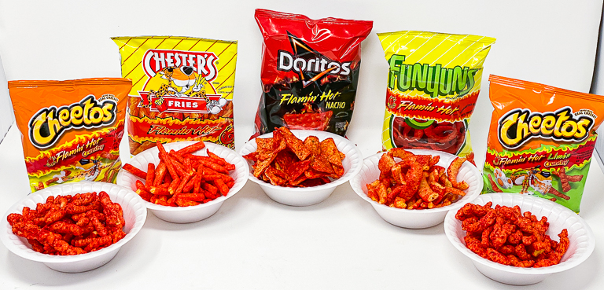

Spicy Chip Flavored Jam Recipe!

Ingredients
- 2 large bags of your favorite spicy chip Spicier is better!
- 1.5 pounds of granulated white sugar about 3 ⅓ cups
- Coarse sea salt (to taste)
- 2 tablespoons fresh lemon juice lime works too!
- hate in your heart 🖤
Directions
- Crush chips using a rolling pin, a book, or whatever you have on hand
- Stir together crushed chips, sugar, and a pinch of sea salt in a sturdy pot
- Bring the nasty lil mixture to a boil. Stir until the sugar is dissolved
- Really show it to the mixture and smash it a few times with a potato masher
- Add the lemon (or lime) juice and continue to boil, stirring frequently
- Once the chip chunks float to the top, you're almost done!
- Mixture should stick to the spoon but fall off in clumps, around 10 to 12 minutes
- Skim the scum from the top; discard or eat if you're a freak
- Transfer your delicious Spicy Chip Jam into clean glass containers, leaving 3/4 inches of headroom
- Let the mixture cool completely then lid the containers
recipe is based on this one!
Contact Me
my email
University of Montana
32 Campus Dr
Missoula, MT 59812